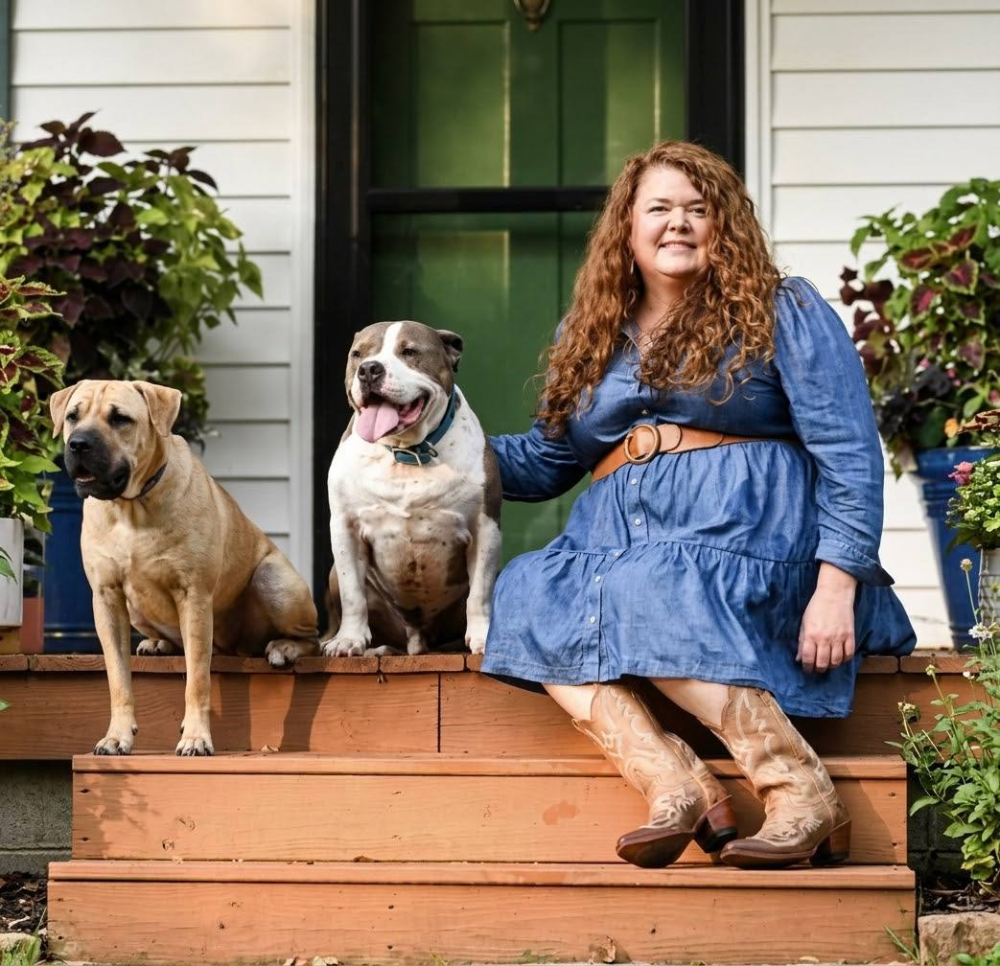
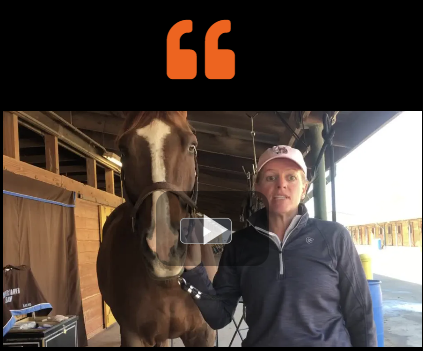
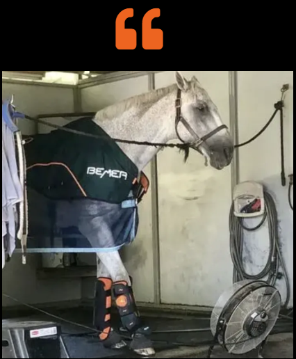
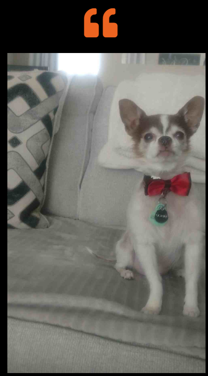
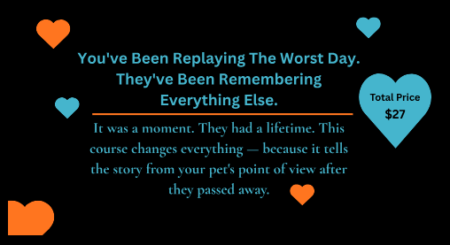
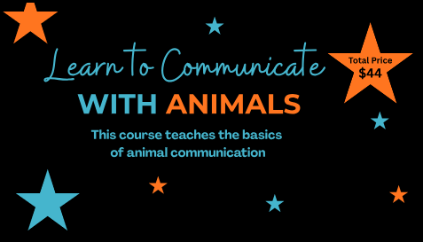
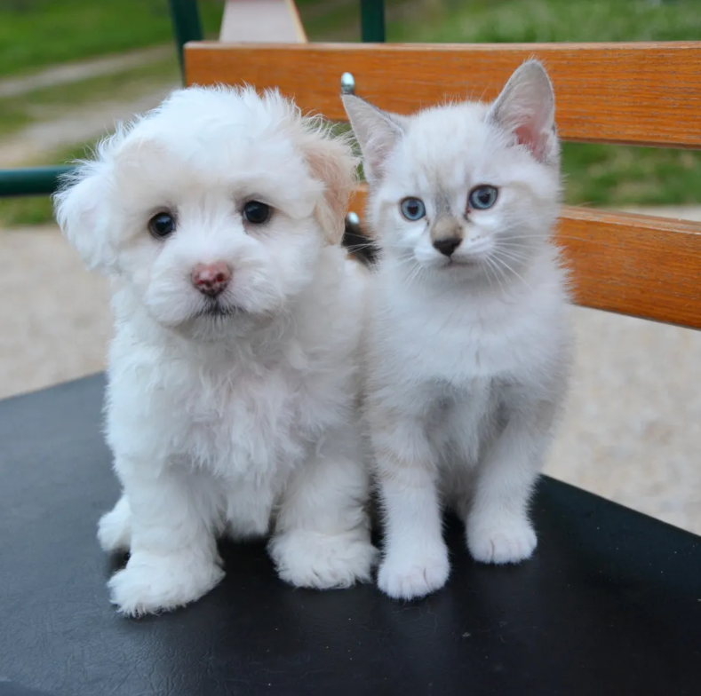
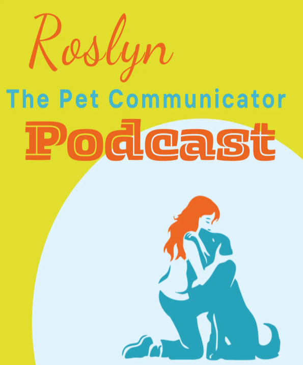

30 Minute Session
$149
- Live video conversation
- Intuitive connection with your pet
- Real-time messages & insights
- Session recording included
Intuitive pet communication · Live over video
Hi! I'm Roslyn, and I'd love to talk with you and your pet. I work with all animals — living and those who have passed. Dogs, cats, horses, birds, and everything in between.
Sessions are held live over video conference, so your pet doesn't even need to be in the room. Whether you want to understand their needs, find more quality time together, or find peace after they've crossed over, I offer insight, reassurance, and healing — so you know your beloved pet is at peace and still connected to you in spirit.

For first-time visitors
A simple, reassuring walkthrough. You don't need to do anything special to prepare — and your pet doesn't even need to be in the room. Here's what to expect:
Choose the session length that fits your needs and schedule a time that works for you.
You'll receive a confirmation email with all the details. All I need from you before our session is a photo of your animal and their name — that's it! Just reply to your confirmation email with those and you're all set.
You'll get a meeting link in your confirmation email. Find a quiet space, settle in, and we'll begin.
Living or passed — animals communicate through feelings, images, and impressions, and I translate what I receive for you in real time.
Whether you're trying to understand a behavior, check in on their health, navigate an end-of-life decision, or simply hear from a pet you've lost — you'll leave with clarity, comfort, and a deeper connection.
Sessions are recorded and shared with you afterward so you can revisit everything.
Simple, transparent rates
All sessions are held virtually via video conference — your pet doesn't need to be present. Prefer a phone session? Just text me after booking and we'll arrange it.
$149
$299
Best value
$399 $447
Loved by pet owners
Over 100 five-star reviews from pet owners just like you. See what their animals had to say.
ID had a lot to say about how he experiences fear — and during our session, he showed us exactly what he meant. What happened next was both startling and beautiful: in real time, we watched him get scared, and were able to step in and show him how the humans in his life could support him. This moment changed everything for Alyssa.

Alyssa & ID Dog sessionGabe's owner suspected he was hurting somewhere in his back right hind end — but Gabe had something different to say. He told me the pain was in his right front leg, above the hoof and below the knee. His owner tried BEMER therapy on that exact spot, and Gabe stretched his leg out as if to say thank you. Animals always know.

Gabe's Story Horse sessionSuch a cool and fun experience! Roslyn was so kind and spot on about everything. It was so heartwarming being able to connect with my puppy and confirm everything I was feeling. She also gave great advice to help him with his separation anxiety. Loved my session.

Minou's Mom Puppy sessionLearn at your own pace

A gentle introduction to communicating with your own pets through simple questions, clear signals, and easy practice tools.
Get Started
A 40-minute masterclass on pet loss grief — replacing the loop of that last day with the lifetime they actually lived.
Get Started
The basics of animal communication in a simple, approachable way — trust what you receive and build confidence through practice.
Get Started
A meaningful present
Looking for the perfect gift for an animal lover? You can purchase a Pet Communication Gift Certificate right here.
Important: my booking system doesn't process gift certificates directly, so to redeem:
That way, I can personally make sure they have the best experience connecting with their animal.
Gift certificates must be redeemed within 6 months of purchase.
Schedule HereAbout Roslyn
I've had a gift for communicating with animals — and people — since I was a child. What started as something I couldn't quite explain became a calling I've spent over a decade developing and sharing with the world.
For the past six years, I've focused exclusively on animal communication, working with pet owners across the U.S. and internationally — from Canada and Ireland to Australia, Dubai, and beyond. I've sat with horse trainers, grieving pet owners, and families facing impossible decisions, and I've had the privilege of being the bridge between them and the animals they love most.
My sessions are real, direct, and sometimes surprising. Animals have a lot to say — about their health, their emotions, their needs, and yes, even what happens after they cross over. I bring warmth, honesty, and a little humor to every session, because connecting with your pet should feel like a relief, not a mystery.
Whether your animal is here with you or has passed on, I'd love to help you hear them.
Book a Session
Now listening
Where animal intuition meets untold stories.
Every episode dives into the unbelievable, the heartwarming, and sometimes the downright haunting tales from the animal world — told by the people who lived them. From horses who knew too much to pets carrying messages from beyond, we explore the deeper truths behind the stories that leave us wondering...
What do our animals know that we don't?
Have a wild story of your own? A riding mishap, a breeding gone wrong, a buyer-beware moment — or something you just can't explain? If you're in the holistic pet health or horse world and want to share your experience (or even spotlight your business), I'd love to hear from you. You might just be our next episode.
Text or email me to be featured: (414) 248-7154 · PC@Roslynn01.com
Sessions are held live over video — your pet doesn't even need to be in the room.
Schedule Here